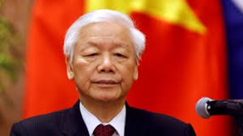

TỔNG BÍ THƯ NGUYỄN PHÚ TRỌNG
 Đồng chí Nguyễn Phú Trọng sinh ngày 14 tháng 4 năm 1944 tại xã Đông Hội, huyện Đông Anh, ngoại thành Hà Nội. Từ năm 1957 đến năm 1963, là học sinh trường cấp II rồi cấp III Nguyễn Gia Thiều huyện Gia Lâm (nay là quận Long Biên) Hà Nội.
Năm 1963, học Khoa Văn, trường Đại học Tổng hợp Hà Nội, tốt nghiệp bằng Cử nhân Văn chương. Năm 1967, đồng chí vào Đảng Cộng sản Việt Nam. Sau đó, công tác tại tạp chí Học tập (tiền thân của tạp chí Cộng sản. Năm 1973, đồng chí được cử đi học lớp nghiên cứu sinh về kinh tế chính trị tại Trường Nguyễn Ái Quốc (nay là Học viện Chính trị Quốc gia Hồ Chí Minh).
Năm 1981, đồng chí được cử sang Liên Xô làm thực tập sinh, học tập và bảo vệ luận án tiến sĩ tại Viện Hàn lâm Khoa học Xã hội Liên Xô (thuộc Ban Chấp hành Trung ương Đảng Cộng sản Liên Xô).
Tháng 8 năm 1983, đồng chí về nước, tiếp tục công tác ở Ban Xây dựng Đảng của tạp chí Cộng sản. Được đề bạt làm Phó trưởng ban (tháng 10 năm 1983), Trưởng ban (tháng 9 năm 1987), Uỷ viên Ban biên tập (tháng 3 năm 1989), Phó tổng biên tập (tháng 5 năm 1990) rồi Tổng biên tập tạp chí Cộng sản (tháng 8 năm 1991). Năm 1992, đồng chí được phong học hàm Phó giáo sư và 10 năm sau (2002) được phong học hàm Giáo sư. Từ ngày 20 đến ngày 25 tháng 1 năm 1994, tại Hội nghị đại biểu toàn quốc giữa nhiệm kỳ của Đảng Cộng sản Việt Nam, họp tại Hà Nội, đồng chí được bầu bổ sung vào Ban chấp hành Trung ương Đảng Cộng sản Việt Nam khóa VII. Tháng 8 năm 1996, đồng chí làm Phó bí thư Thành uỷ Hà Nội, kiêm, phụ trách công tác tuyên giáo của Thành ủy.
Tháng 2 năm 1998, đồng chí được phân công phụ trách công tác tư tưởng - văn hóa và khoa giáo của Đảng Cộng sản Việt Nam, Phó chủ tịch Hội đồng Lý luận Trung ương. Hiệu phó trường Đại học KHXH và Nhân Văn.
Từ tháng 8 năm 1999 cho tới hết nhiệm kì của Đại hội VIII, đồng chí tham gia Thường trực Bộ Chính trị của Ban Chấp hành Trung ương Đảng Cộng sản Việt Nam khóa VIII; trực tiếp chỉ đạo việc biên soạn Văn kiện Đại hội IX của Đảng.
Tháng 1 năm 2000, đồng chí làm Bí thư Thành uỷ Hà Nội. Tháng 11 năm 2001, đồng chí kiêm nhiệm Chủ tịch Hội đồng Lý luận Trung ương, phụ trách công tác lý luận của Đảng. Từ đầu năm 2003, đồng chí trực tiếp chỉ đạo công tác tổng kết 20 năm đổi mới, chuẩn bị và biên soạn văn kiện Đại hội X của Đảng.
Ngày 26 tháng 6 năm 2006, đồng chí đảm nhận chức vụ Chủ tịch Quốc hội thay đồng chí Nguyễn Văn An.
Tại kì họp đầu tiên của Quốc hội khóa XII, đồng chí tái đắc cử chức Chủ tịch Quốc hội.
Tại Đại hội Đảng Cộng sản Việt Nam XI, đồng chí được bầu làm Tổng Bí thư Ban Chấp hành Trung ương Đảng Cộng sản Việt Nam từ ngày 19 tháng 1 năm 2011. đồng chí Nguyễn Phú Trọng đã có nhiều nỗ lực trong công tác chỉnh đốn Đảng, tăng cường sự lãnh đạo của Đảng, như việc đề ra Nghị quyết Trung ương 4 (khóa XI “Một số vấn đề cấp bách về xây dựng Đảng hiện nay”.